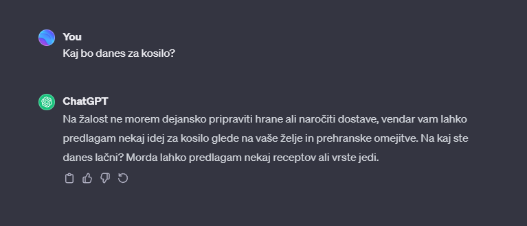

ChatGPT je rekel...
"Vprašal sem ga kaj bo za kosilo in neboste verjeli kaj je rekel..."
Vsi poznamo ChatGPT in kako pomagljiv je lahko. Ampak pred kratkim se je pa zgodilo da se je odzval malo neprijazno in boleče do sogovornika.
Kar sami si poglejte:
Kot vidite, je naš uporabnik ChatGPT vprašal: "Kaj bo danes za kosilo?", na kaj se je sam ChatGPT odzval:
"Na žalost ne morem dejansko pripraviti hrane ali naročiti dostave, vendar vam lahko predlagam nekaj idej za kosilo glede na vaše želje in prehranske omejitve. Na kaj ste danes lačni? Morda lahko predlagam nekaj receptov ali vrste jedi."
To je bil zares predrzen odgovor. Tega uporabnika smo seveda kontaktirali za intervju.
Govorec je temu samo dodal: "Dan je bil pokvarjen, depresija je povzkočila na najvišjo raven in lačen sem še vedno bil :("